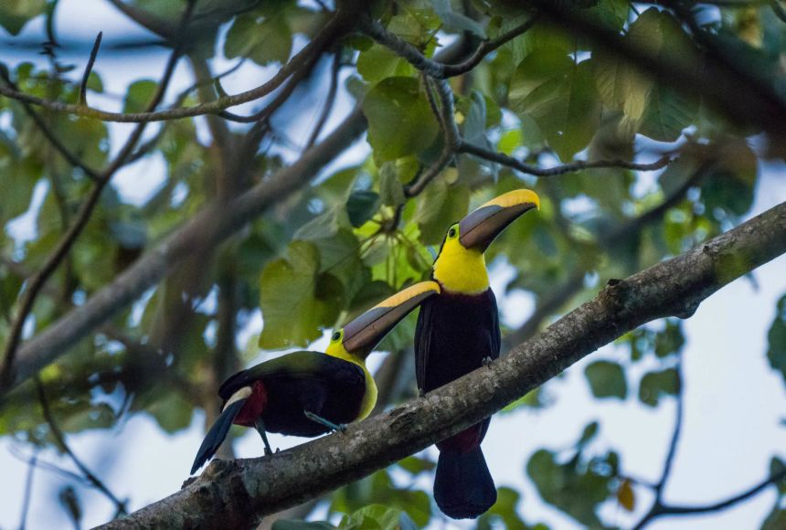

| Home |
About |
Articles |
Alam Sekitar
Langkah-Langkah Untuk Memelihara/ Menjaga Alam Sekitar
Dasawarsa ini, sama ada kita sedar atau tidak lantaran terlalu dihidangkan dengan pembangunan negara yang semakin gah di persada dunia. Namun disebalik itu, kita acapkali tersentak oleh pelbagai permasalahan yang mengancam khazanah negara kita iaitu alam sekitar. Kekayaan flora dan fauna yang dimiliki negara kita seperti kawasan-kawasan tumbuhan hijau, udara dan air semakin diancam pencemaran dek kerana pembangunan sosioekonomi yang berlangsung bagai cendawan tumbuh selepas hujan. Kesan daripada kecuaian manusia mengejar kekayaan tanpa memikirkan akibat terhadap alam sekitar telah menyebabkan insiden atau bencana berlaku yang mengancam nyawa manusia. Justeru, kita perlu sedar bahawa demi kelangsungan tamadun manusia sejagat dan habitat yang kita huni, pemeliharaan dan pemuliharaan alam sekitar perlu menjadi agenda utama pada masa kini. Apakah langkah-langkah yang boleh kita laksanakan untuk menjaga alam sekitar?
Prakarsa utama dalam mendepani cabaran yang melibatkan setiap pihak adalah bermula dengan polisi yang digunakan oleh negara serta mampu menjadi model kepada negara serantau. Sebagai pihak berkuasa, anjakan paradigma perlu diambil bagi memastikan kemajuan masyarakat tempatan berlaku dari semasa ke semasa. Penggunaan sumber tenaga yang boleh diperbaharui wajar diperkenalkan dan diperkasa dalam industri-industri yang berisiko mengancam pemeliharaan alam sekitar di negara ini. Sebagai contoh, penggunaan sumber solar sebagai tenaga elektrik di kawasan bandar perlu diperluaskan supaya penggantungan terhadap penjanaan elektrik daripada sumber arang dan hidro eleketrik berkurangan. Sebaliknya, sumber air yang digunakan dapat disalirkan ke kawasan-kawasan yang kurang bekalan air bersih dan juga digunakan untuk pertanian di kawasan luar bandar.
Selain itu, langkah-langkah untuk menjaga alam sekitar yang boleh disertai oleh ahli masyarakat adalah melakukan aktiviti sukarelawan membersihkan kawasan sekitar. Persis kata peribahasa, kerana nila setitik, rosak susu sebelanga. Hal ini demikian kerana masih terdapat segelintir pihak yang tidak bertanggungjawab membuang sisa-sisa yang tidak sepatutnya ke dalam sungai atau laut. Pemerkasaan undang-undang juga mungkin tidak diendahkan atau meninggalkan kesan kepada mereka. Oleh itu, kita sebagai warganegara yang cinta akan negara seharusnya menyertai aktiviti-aktiviti sukarelawan yang berusaha membersihkan kawasan yang dicemari seperti kawasan sungai dan pantai. Pencemaran sampah dan sisa lain yang sering berlaku di negara kita perlu diambil serius oleh semua pihak. Jika insiden ini dibiarkan, hidupan akuatik dan juga sumber air kita akan terancam dan menyebabkan kita kekurangan sumber tersebut. Sebagai contoh, di Jepun pernah berlaku satu wabak yang menyebabkan setiap penduduk di kampung yang menggunakan sungai tercemar sebagai sumber air harian mati dan lahir dengan kecacatan yang kekal. Maka, kita seharusnya mengambil sejarah ini sebagai iktibar bagi menjamin kelangsungan hidup untuk masa hadapan.
Pada peringkat individu pula, amalan kitar semula adalah langkah terbaik bagi menyelamatkan alam sekitar. Kitar semula adalah menggunakan semula bahan-bahan terpakai menjadi bahan lain yang bermanfaat. Misalnya, takungan air hujan boleh digunakan sebagai air siraman pokok atau tumbuhan yang kita tanam di halaman rumah. Bahan-bahan lain seperti plastik, kaca dan bahan elektronik yang tidak berfungsi boleh disumbangkan kepada pengusaha kitar semula. Setiap bahan berpotensi untuk diproses semula menjadi barang yang berguna kepada masyarakat tanpa perlu membazirkan sumber yang baharu. Mutakhir ini, syarikat-syarikat pakaian seperti kasut dan beg mula menggunakan bahan terpakai sebagai bahan asas dalam produk baharu mereka. Dengan kesedaran entiti-entiti besar dalam mementingkan pemeliharaan alam sekitar mampu menjadi medium kepada sebahagian masyarakat untuk sedar akan manfaatnya. Dengan berbuat demikian, kita bukan sahaja dapat menyelamatkan alam sekitar, ia juga dapat membantu kita menjadi pengguna yang berhemah dan tidak menggunakan wang yang banyak dalam mendepani cabaran ekonomi yang telah meningkatkan kos sara hidup.
Secara tuntas, pelbagai langkah perlu dilaksanakan dalam menjamin pemeliharaan serta pemuliharaan alam sekitar. Setiap pihak di setiap peringkat seharusnya memainkan peranan masing-masing bagi mencapai objektif kelestarian alam sekitar. Inisiatif ini merupakan usaha yang kolektif dimana dengan penglibatan setiap di antara kita dapat membuahkan hasil yang sangat berbaloi bukan sahaja kepada kita malah untuk kehidupan generasi-generasi akan datang. Semoga ahli pemikir bekerjasama dengan badan eksekutif dalam negara menjadikan polemik ini sebagai agenda utama negara dan mencari mekanisme terbaik dalam memastikan pembangunan dan alam sekitar kita mencapai tahap terbaik dan menjadi kebanggaan seluruh rakyat Malaysia.
